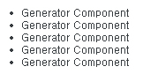
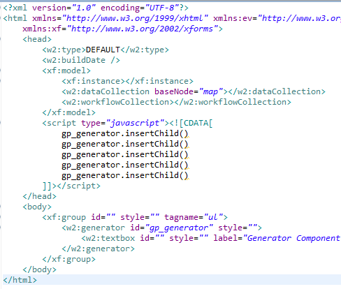
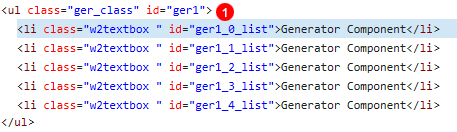

29.Generator
Generator은 Websquare 컴포넌트를 동적으로 생성하여 반복하여 출력하는 컴포넌트입니다. 일반적인 웹 프로그래밍 MVC모델의 view 단의 for문과 비슷한 컴포넌트입니다. Generator 컴포넌트는 이론적인 설명보다 예제를 보는 것이 더 이해하기 수월할 것입니다. Table 코딩 심화의 Table 데이터가 모두 동적이며 row가 반복되는 경우 예제와 리스트형 코딩하기\의 데이터가 동적이며 요소(li)의 개수가 동적이며 반복되는 경우 예제를 참고해 주십시오.
29.1Property
Property | Description |
|---|---|
class | 사용자가 임의의 class를 정의할때 사용합니다. |
id | 사용자가 임의의 id를 정의할때 사용합니다. |
tagname | 반복되는 부분을 감싸는 태그의 태그명을 지정합니다. |
29.2브라우저 캡쳐화면

[그림 29-1]generator_img1
insertChild() 예제

[그림 29-2]generator_img3
Generator API
No | API | Description |
|---|---|---|
1 | insertChild() | index에 해당하는 위치에 반복부를 삽입한다. index가 생략 된 경우 마지막에 삽입된다. |
2 | getChild() | 컴포넌트의 ID와 해당 컴포넌트가 속해 있는 반복부의 index를 기반으로 컴포넌트 객체를 반환합니다. |
3 | removeChild() | index에 해당하는 반복부를 삭제하며 index가 없을 경우 마지막 반복부를 삭제합니다. |
29.3CSS Overriding

[그림 29-3]generator_img2
No | Class | Description |
|---|---|---|
1 | ger_list | ger_list는 사용자 정의 클래스로 Stylesheet_ext.css 다음에 적용됩니다. 동일한 스타일 시트를 정의함으로써 overriding(덮어쓰기) 됩니다. |
29.4주의사항 및 Tip
일반적인 웹 프로그래밍 MVC모델의 view 단의 for문과 유사한 컴포넌트입니다.
사용할 수 없는 컴포넌트 * Chart * Grid * Menu * Switch * TabContainer * TabControl * Treeview * WindowContainer
웹스퀘어 API를 통해 주로 제어합니다. 반복되는 Generator을 추가, 삭제하거나 컨트롤할수 있습니다.